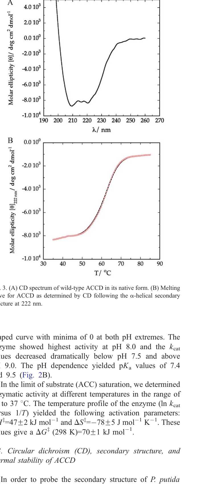
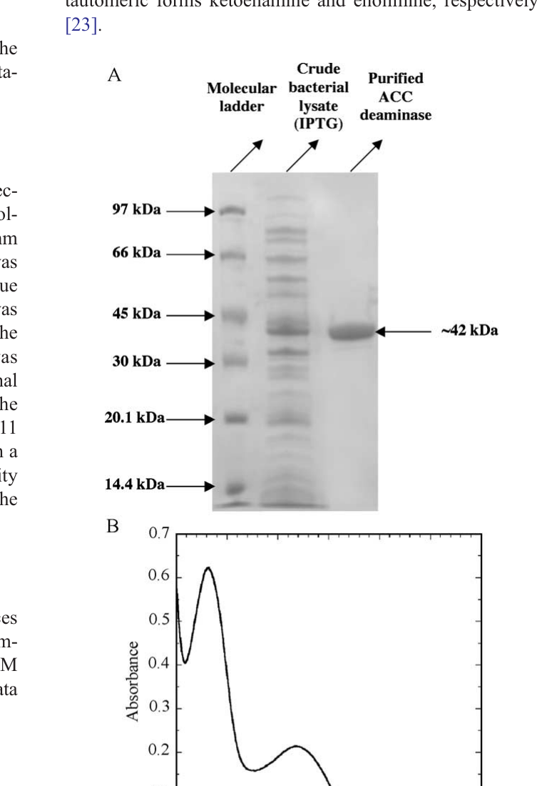
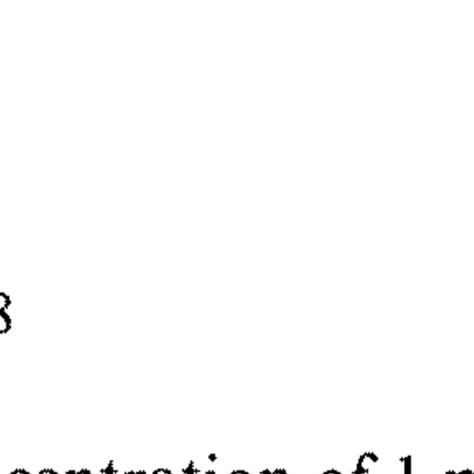
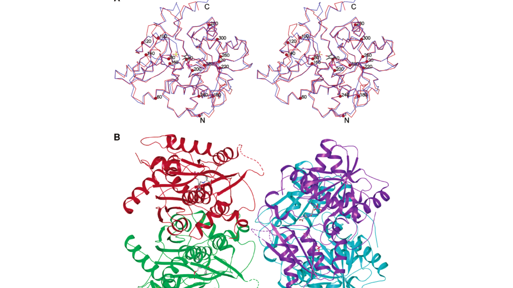
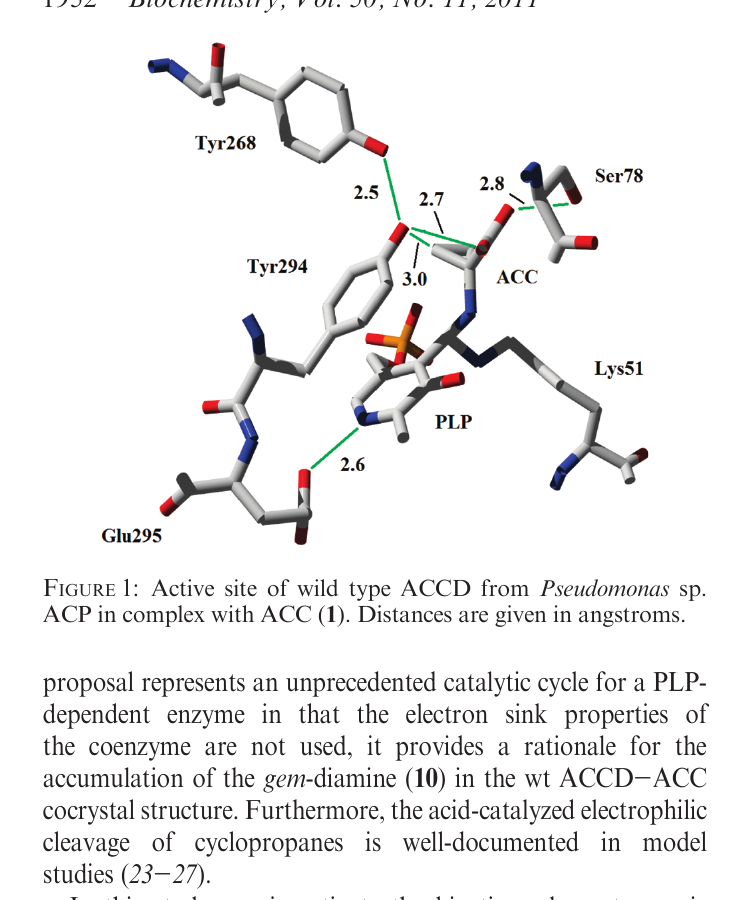
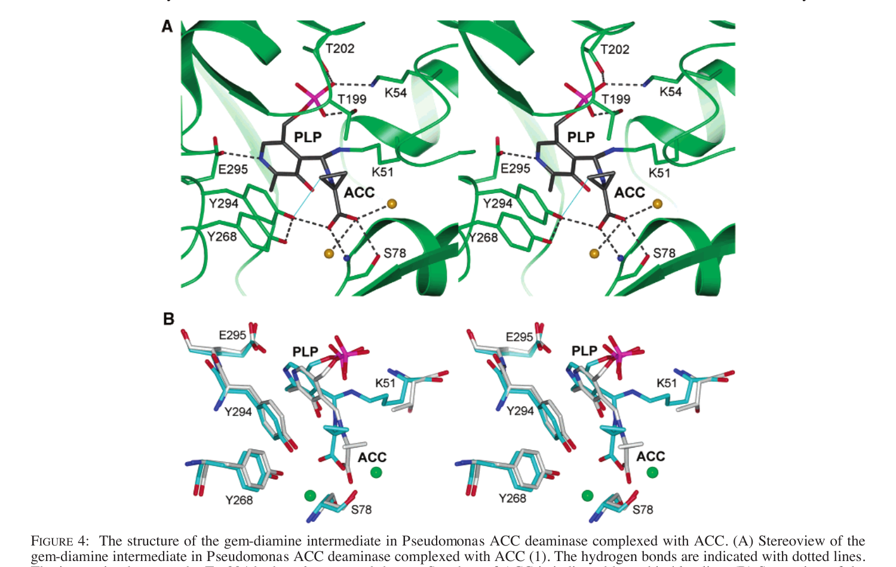
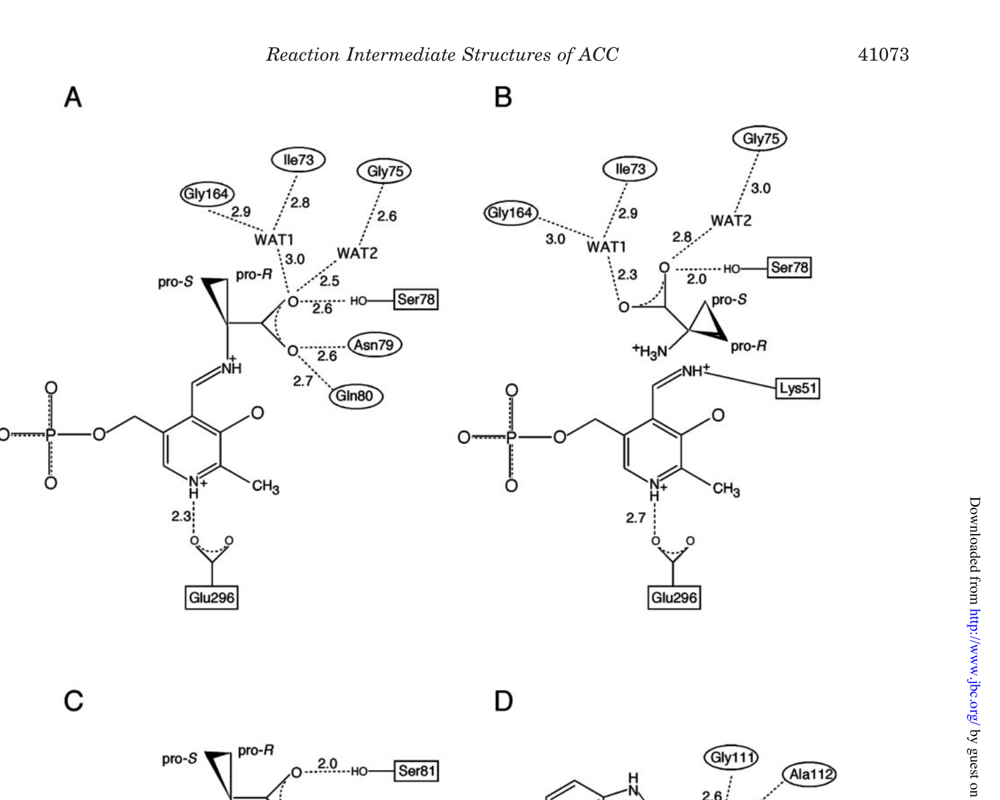
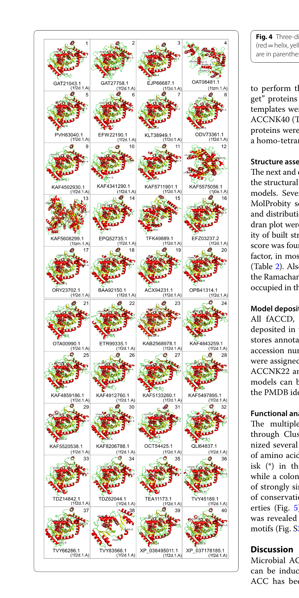

Structural overview
ACC deaminase belongs to fold-type II of PLP-dependent enzymes (the tryptophan-synthase β-subunit superfamily), which also includes threonine deaminase and O-acetylserine sulfhydrylase. Each monomer (~338 aa, ~36–42 kDa) has two domains, with the active-site cleft buried between them and the PLP cofactor anchored at the N-terminus of a short α-helix (residues 199–213, UW4 numbering).
Secondary-structure content (UW4, CD spectroscopy)
- 30 % α-helix
- 9 % β-strand
- 21 % turn
- 40 % random coil



Crystal structures
| PDB | Organism | State | Resolution | Reference |
|---|---|---|---|---|
| 1TYZ | Pseudomonas sp. ACP | Native holoenzyme (internal aldimine) | 2.0 Å | Karthikeyan 2004 |
| 1TZ2 | Pseudomonas sp. ACP | + ACC (substrate complex) | 2.3 Å | Karthikeyan 2004 |
| 1TZM | Pseudomonas sp. ACP | + β-Cl-D-Ala (substrate analog) | 2.3 Å | Karthikeyan 2004 |
| 1TZJ | Pseudomonas sp. ACP | + D-vinylglycine | 2.3 Å | Karthikeyan 2004 |
| 1TZK | Pseudomonas sp. ACP | + α-ketobutyrate (product) | 2.5 Å | Karthikeyan 2004 |
| 1J0C | H. saturnus (yeast) | K51T mutant, PLP only | 2.0 Å | Ose 2003 |
| 1J0D | H. saturnus | K51T · external aldimine (PLP-ACC) | 2.0 Å | Ose 2003 |
| 1J0E | H. saturnus | Y295F · non-covalent ACC complex | 2.75 Å | Ose 2003 |
Fold & quaternary assembly
- Fold: tryptophan-synthase β-subunit family (fold-type II PLP enzymes).
- Per-monomer architecture: two domains (N-terminal large + C-terminal small); active-site cleft buried between them.
- Crystal packing (Karthikeyan): P2₁2₁2₁, 4 monomers in the asymmetric unit, 55.9% solvent.
- Functional unit: dimer in solution per Karthikeyan; trimer of identical subunits in biochemical native-mass studies (Honma 1978, Sheehy 1991, Shahid 2023). The two papers reflect crystallographic vs. solution assemblies — the biologically relevant assembly is the homotrimer.
- Dimer interface (Karthikeyan): buries 1786 Ų / monomer (15.5 % surface); 1089 Ų hydrophobic.
- Sequence identity vs. yeast H. saturnus: ~60 %; Cα RMSD 0.96 Å. Two insertions: 104–108 (bacterial +3 aa), 249–258 (yeast +2 aa).
- Disordered region: loop residues 129–140 in three of four monomers in the bacterial ASU.

Active-site architecture (UW4 numbering)
PLP cofactor binding
| Residue | Contact | Role |
|---|---|---|
| Lys51 | Nε → C4′ PLP | Internal-aldimine Schiff base |
| Asn79 | side-chain → O3′ PLP (3.0 Å) | Cofactor O3′ H-bond |
| Glu295 | carboxylate → N1 of PLP (2.6 Å) | Ion-pair with pyridinium N (electron-sink tuning) |
| Lys54 | side-chain → PLP phosphate | Charge neutralisation |
| Val198 / Thr199 / Gly200 / Thr202 | main-chain amides → PLP phosphate | Anion hole at helix N-cap |
| Leu322 | vdW packing on PLP ring | Cofactor positioning |
Substrate (ACC) recognition
| Residue | Contact | Role |
|---|---|---|
| Ser78 | OH → ACC carboxylate (2.8 Å) | Substrate anchoring; candidate β-H base |
| Asn79 / Gln80 | main-chain amides → carboxylate | D-amino-acid stereoselectivity |
| Gly44 | substrate-gate (loop 39–50) | Gateway residue — G44D inactivates |
| Tyr294 | phenolic OH ↔ pro-S β-CH₂ of ACC (3.0 Å) | Catalytic nucleophile / general acid |
| Tyr268 | OH → Tyr294 OH (2.5 Å) | Charge-relay partner — lowers Tyr294 pKa |




Fungal isoforms (in silico)
Pramanik & Mandal (2022) modelled 40 fungal ACC-deaminase sequences from 19 genera (Ascomycota 74 %, Basidiomycota 26 %; Colletotrichum, Fusarium, Trichoderma, Metarhizium dominate). Templates used: PDB 1F2D (yeast), 1TZM (Pseudomonas), 1J0A.
- Length range: 149–750 aa
- MW: 16.2 – 82.5 kDa
- pI: 4.76 – 10.06
- Aliphatic index: 81.5 – 100.1 (thermostable)
- Quaternary state: homo-dimer for 39/40; Mycena galopus ACCNK13 predicted as homo-tetramer
- Conserved motif: PALP (pyridoxal-phosphate-dependent enzyme signature) in all 40 sequences
